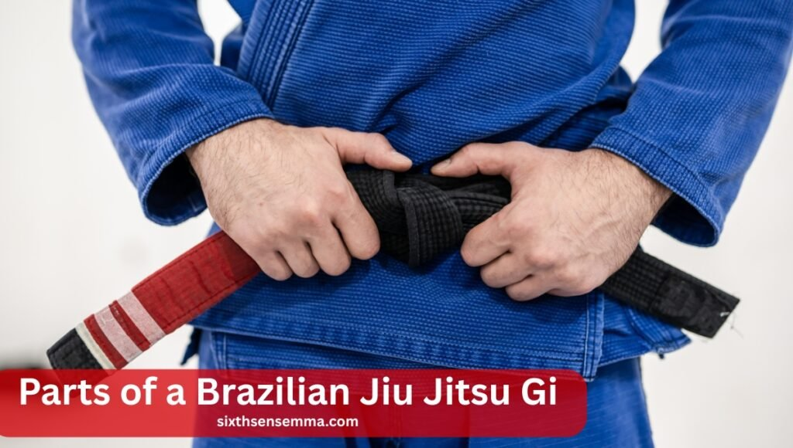
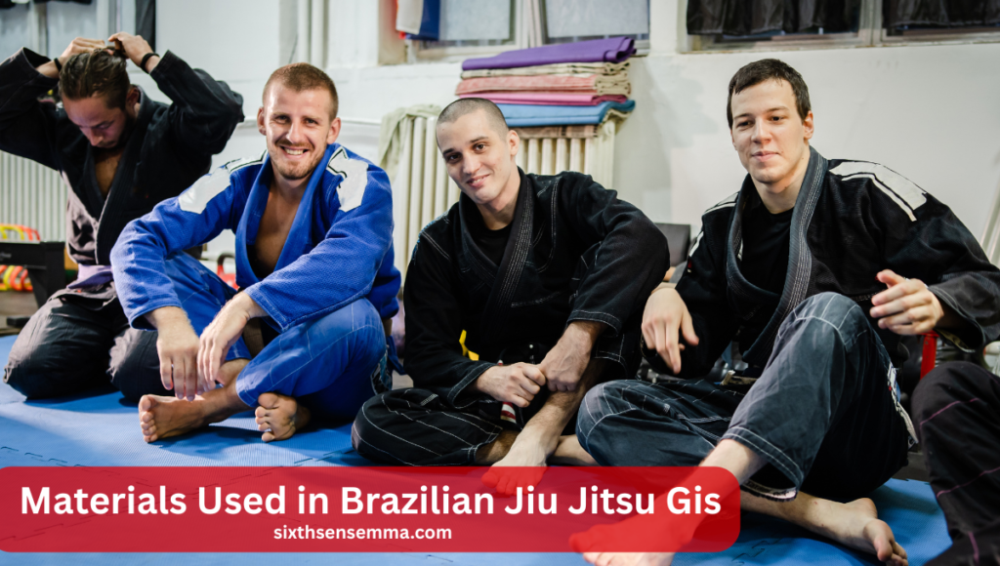

Brazilian Jiu Jitsu Gi Basics: Types, Fit & Buying Tips

The Brazilian Jiu Jitsu gi is one of the most important parts of training in BJJ. It’s not just a uniform, it helps you learn how to grab, control, and apply techniques during practice and matches. Whether you’re just starting out or getting ready for competition, wearing the right gi can make your training smoother and more effective.
Compared to other martial arts uniforms, a Brazilian Jiu Jitsu gi is much tougher and made to handle the pulling, gripping, and rolling that BJJ involves. In this guide, you’ll learn how to choose the right gi, understand the different materials, find the correct size, take care of your gi, and follow competition rules.
What is a Brazilian Jiu Jitsu gi and why do I need one?
A Brazilian Jiu Jitsu gi is the uniform you wear when training or competing in BJJ. It’s made from strong fabric so it can handle grabbing and pulling during fights. The gi is important because it helps you practice real techniques, control your opponent, and learn the sport properly.
What is a Brazilian Jiu Jitsu Gi?
A Brazilian Jiu Jitsu gi is a strong, thick uniform used for BJJ training and matches. It’s made to handle grabbing, pulling, and ground fighting. It helps you practice techniques safely and correctly. Without it, many grips, chokes, and moves wouldn’t be possible in gi-based BJJ.
What distinguishes it from other outfits used in martial arts?
The Brazilian Jiu Jitsu gi is stronger than karate or taekwondo uniforms and tighter than judo gis. It’s built to take heavy use during rolling and grappling. The stitching is stronger to avoid tearing. Its close fit also limits how much your opponent can grab, making training more real.
Why the Gi matters in technique and grip control
The gi is a tool in BJJ, not just a uniform. It helps you learn how to hold, control, and submit your opponent. Many techniques—like collar chokes and sleeve grips—only work with the gi. Training with it teaches better control and sharpens your overall game. It also builds strong grip strength, which helps in both gi and no-gi.
Also Read Our Article: Martial Arts for Kids: Building Confidence and Discipline
Parts of a Brazilian Jiu Jitsu Gi
A Brazilian Jiu Jitsu gi has three main parts: the jacket, the pants, and the belt. Each part is made for comfort, strength, and movement. The gi must handle tough training and gripping. When choosing a gi, look at how each part fits and feels. A well-made gi can improve your training and last much longer.
The Jacket (Kimono) – Fit, Cut & Weave
The jacket is the top part of the gi. It should fit close to your body but still let you move freely. You can choose from standard, slim, or fitted cuts. The weave style affects how heavy, soft, or strong the jacket is. A good jacket helps with defense and grip work while keeping you comfortable during training.
Reinforced Pants – Knees, Cord, and Comfort
The pants are built to handle hard training. They have extra fabric at the knees to stop them from tearing. To keep the waist tight, most pants have a drawstring or rope. Good BJJ pants should feel light but strong. They should let you move easily, sit well on your hips, and not slide during sparring.
The Belt – Ranking System and Meaning
The belt shows your level in BJJ. Everyone starts with a white belt. As you train more and improve, you earn new belts—blue, purple, brown, and black. Each belt takes time and effort. Belts are not just colors—they show how much you’ve learned and how far you’ve come in your Brazilian Jiu Jitsu journey.
Belt System and Progression in BJJ
In Brazilian Jiu Jitsu, the belt system shows your skill and progress. You start at white belt and work your way up. Each belt level takes time, effort, and training. Both kids and adults follow different paths. The belt you wear shows how much you’ve learned and grown in the sport.
Adult Belt Colors and Levels
Adults follow a five-color system: white, blue, purple, brown, and black. Everyone begins at white, and it takes years of training to reach black belt. Each belt requires learning techniques, sparring, and improving control. The journey between belts is long, but each step shows dedication and growth in Brazilian Jiu Jitsu.
Kids’ Belt System Explained
Kids have their own belt system with more colors. White, gray, yellow, orange, and green are some of these.Kids progress through these belts until they are 16. After that, they join the adult ranking system. These belts help kids stay motivated and track their progress while they learn the basics of BJJ.
Stripes, Time-in-Rank, and IBJJF Rules
Small white bands are called stripes, and they are added to belts. They show your progress between belt levels. In competitions like IBJJF, time spent at each belt is very important. You must train for a certain period before getting promoted. These rules make sure every student learns properly before moving up.
Gi vs No-Gi Brazilian Jiu Jitsu
Brazilian Jiu Jitsu can be practiced in two styles: gi and no-gi. The gi uses a traditional uniform, while no-gi uses tight shirts and shorts. Both styles are great, but they feel different. Understanding both helps you become a better grappler, with or without the use of grips on clothing.
| Feature | Gi BJJ | No-Gi BJJ |
|---|---|---|
| Clothing | Gi jacket, pants, and belt | Rash guard and shorts/spats |
| Grip Type | Use of clothing for grips | Body grips only |
| Speed | Generally slower, grip-based | Faster-paced, more slippery |
| Techniques | Collar chokes, sleeve grips, lapel wraps | Underhooks, overhooks, clinch work |
| Competition Rules | IBJJF Gi rules | IBJJF No-Gi or ADCC rules |
| Best For | Building fundamentals and control | Speed, transitions, and scrambles |
Key Differences in Attire and Techniques
In gi training, you wear a brazilian jiu jitsu gi, which allows grip-based moves. Your opponent can grab your collar, sleeves, and pants. Wearing shorts and a rash guard is required for no-gi, and it is not permitted to hold the garments. No-gi is faster and requires different techniques for control and submissions.
Which One Should You Start With?
Most beginners start with the brazilian jiu jitsu gi. It teaches you the basics, like proper grips and movement. The gi helps you understand how to control your opponent. After learning the basics, you can explore no-gi, which offers a faster, more athletic style of training and sparring.
Cross-training Tips
Training in both gi and no-gi gives you a complete skill set. Try switching styles every week or month to stay sharp in both. Gi improves control and technique, while no-gi improves speed and body awareness. Practicing both helps you become more well-rounded and ready for different kinds of matches.
Also Read Our Article: Martial Arts Classes: How to Choose the Right One
Gi Weaves and Their Differences
A Brazilian jiu jitsu gi’s weight, strength, and comfort are all influenced by its weave. Different weaves are made for different needs. Some are light and easy to move in, while others are thick and very strong. Knowing the differences helps you choose the best gi for training, competition, or everyday rolling.
Single Weave – Lightweight & Breathable
Single weave gis are light and easy to wear. They’re great for hot weather or beginners who want comfort. The material is thin and breathable, making it easier to move. However, single weave gis are less durable, so they may wear out faster if you train often or roll very hard.
Double Weave – Heavier & More Durable
Double weave gis are much thicker and stronger. They last longer and are harder for your opponent to grip. These gis can feel heavier and warmer, but they’re great for tough training. If you want a gi that holds up over time, especially during intense rolls, a double weave is a solid choice.
Gold & Pearl Weaves – The Balanced Options
Gold and pearl weaves give you the best of both worlds. Pearl weave is tighter, lighter, and more resilient than gold weave, which is slightly softer and more flexible. Both are commonly used for competition and everyday training. They balance comfort, strength, and weight, making them great choices for all skill levels.
| Weave Type | Weight | Durability | Shrinkage |
|---|---|---|---|
| Single | Light | Medium | High |
| Double | Heavy | Very Durable | Low |
| Gold | Medium | High | Medium |
| Pearl | Medium-Light | Durable | Low to Medium |
Materials Used in Brazilian Jiu Jitsu Gis
The material used in a brazilian jiu jitsu gi affects how it feels, fits, and lasts. Some fabrics are softer, while others are stronger or lighter. Knowing the difference helps you choose the right gi for your needs—whether for everyday training or competition. Good material also helps with comfort and durability during tough sessions.

Cotton vs Ripstop Fabric
Cotton is soft, breathable, and feels good on the skin. Most traditional gis are made from cotton. Ripstop fabric, on the other hand, is lighter and stronger. Ripstop is a great option if you want something strong, light, and quick-drying after training.
Pre-shrunk vs Traditional Fabric
Pre-shrunk fabric means the gi won’t shrink much after washing. This helps the gi keep its size and fit. Traditional fabric, usually cotton, can shrink if washed in hot water or dried in heat. Always read the label. If your gi is not pre-shrunk, wash it in cold water and hang it to dry.
Stitching and Reinforcement Details
Strong stitching makes your gi last longer. Look for double or triple stitching, especially in areas that get pulled a lot like the sleeves, knees, and armpits. Reinforced patches in high-stress spots add strength. A well-stitched gi can handle regular rolling without tearing and gives you more value for your money.
Fit and Style Options
Everyone’s body is different, so finding the right fit is important when choosing a brazilian jiu jitsu gi. A good fit means better comfort, movement, and performance. There are options for different builds, including men, women, and kids. The right fit makes you feel confident on the mat and helps you train better.
Standard Fit vs Slim Fit
Standard fit gis are a bit looser and offer more room to move. Slim fit gis are tighter, with a closer cut to the body. They work well for athletes with a lean build or those who prefer less material for opponents to grab. Choose the one that feels right for your body type and style.
Men’s, Women’s, and Kids’ Cuts
Many brazilian jiu jitsu gi brands offer different cuts based on who will wear them. Men’s gis are built for broader shoulders. Women’s brazilian jiu jitsu gi designs fit better at the waist and hips. Kids’ gis are smaller, lighter, and come in fun colors. The right cut improves comfort, movement, and looks.
BJJ Gi Sizing Guide (A0–A5 & Brand Variations)
| Size | Height Range | Weight Range |
|---|---|---|
| A0 | 5’0″–5’4″ | 95–120 lbs |
| A1 | 5’4″–5’8″ | 125–155 lbs |
| A2 | 5’8″–6’0″ | 155–190 lbs |
| A3 | 6’0″–6’3″ | 190–225 lbs |
| A4 | 6’2″–6’4″ | 225–250 lbs |
| A5 | 6’4″+ | 250+ lbs |
How to Choose the Right Brazilian Jiu Jitsu Gi
Choosing the right brazilian jiu jitsu gi depends on your experience, needs, and training goals. Beginners should focus on comfort and fit. Advanced students may want a lighter or stronger gi. Think about how often you train and whether you need it for daily use or competition. Picking the right gi makes training smoother and more fun.
Beginners vs Advanced Practitioners
Beginners should pick a gi that fits well and is not too expensive. It doesn’t need to be fancy—just strong and comfortable. Advanced athletes often need lighter gis for tournaments or stronger ones for daily hard training. As you grow in BJJ, you’ll understand which brazilian jiu jitsu gi works best for your style and needs.
Training Gi vs Competition Gi
Training gis are made to last long and handle tough practice. They are usually thicker and heavier. Competition gis are lighter to help you make weight. They also dry faster. If you compete, make sure your brazilian jiu jitsu gi follows tournament rules. Having one gi for training and another for events is a smart idea.
Budget vs Premium Options
If you’re just starting, a good brazilian jiu jitsu gi for sale in the $60–$100 range works well. These gis offer good quality at a fair price. Premium gis from brands like Fuji, Hayabusa, and Shoyoroll can cost $150 or more, but they offer better fit, comfort, and durability. Choose based on your budget and how often you train.
BJJ Gi Care and Maintenance Tips
Taking care of your brazilian jiu jitsu gi helps it last longer. Always wash it after training to keep it clean and smelling fresh. Avoid using hot water or dryers unless the gi is pre-shrunk. Having more than one gi helps with rotation.
How to Wash and Dry a Gi Without Shrinking
To avoid shrinking your brazilian jiu jitsu gi, wash it in cold water and hang it to dry. Don’t use a dryer unless the gi is pre-shrunk. Dryers can make it tighter and uncomfortable. Air drying helps keep the fit just right. If you want to soften it, try using a little fabric softener.
Preventing Odors, Mold, and Bacteria
Always wash your gi after training. Don’t leave it in your gym bag—it will start to smell and grow bacteria. Use sports detergent or add a bit of white vinegar to your wash to kill germs. Keeping your brazilian jiu jitsu gi clean also prevents skin issues and shows respect for your teammates.
Common Mistakes When Buying a BJJ Gi
Buying the wrong brazilian jiu jitsu gi can waste your money and affect your training. Common mistakes include getting the wrong size, ignoring shrinkage, or buying a gi that’s not allowed in competitions. Always check the fabric type, fit, and brand reputation before buying. A little research saves you time, money, and frustration.
Ignoring Fit and Shrinkage Potential
A gi that’s too tight or too loose can make training hard. Some fabrics shrink more than others, so always check if your brazilian jiu jitsu gi is pre-shrunk. If in doubt, go one size up—you can always shrink it slightly if needed.
Buying a Non-Competition Legal Gi
Some gis are not allowed in IBJJF tournaments. Always check the gi color, patch placement, sleeve length, and brand approval before buying. If your brazilian jiu jitsu gi doesn’t meet the rules, you might not be able to compete. For competitors, this is one of the most important buying steps.
Conclusion
Finding the right brazilian jiu jitsu gi takes some research, but it’s worth the effort. The right gi will fit well, feel comfortable, and last through training. Whether you’re a beginner or competitor, choosing a quality gi helps you perform better. Explore trusted brands, follow care tips, and invest in gear that supports your journey in BJJ.
FAQ’s
Gi color doesn’t affect training, but in competitions like IBJJF, only white, blue, and black are allowed. Choose any color for regular classes.
Top BJJ gi brands include Fuji, Tatami, Hayabusa, and Shoyoroll. The best gi depends on your fit preference, training style, and budget.
A beginner BJJ gi costs around $60–$100. Premium gis from top brands can cost $150–$200+, depending on quality, brand, and features.
A gi in jiu-jitsu is a thick, durable uniform made for grappling. It includes a jacket, pants, and belt, used for training and competition.
BJJ is expensive due to gym memberships, coaching fees, competition costs, and gear like gis. It’s also a specialized sport with high-quality instruction.
Wear a rash guard or compression shirt under your gi jacket. Some prefer shorts or spats under the gi pants for comfort and hygiene.
Yes, you can start with no-gi classes using rash guards and shorts. However, many schools recommend starting with a gi to learn fundamentals.
The highest BJJ belt is red, awarded to grandmasters with decades of experience. It’s extremely rare and follows the black and coral belts.
Joe Rogan has been seen wearing Origin BJJ gis, an American-made brand known for comfort, quality materials, and strong support in the BJJ community.
Train with us in Coppell
The first class is free. Shorts, a t-shirt and a water bottle. We lend the rest.
Book a free class